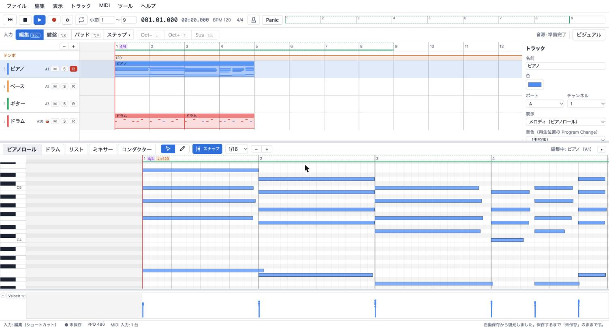

DAW のように編集する
トラックとクリップ、ピアノロール、Velocity / CC / Pitch Bend のレーン。クオンタイズ（強さ・シャッフル）、ヒューマナイズ、ベロシティの一括編集。

Web ブラウザで動く、MIDI 制作に特化したシーケンサー。
ブラウザで使うインストールは要りません。曲データも音源もブラウザの中だけで扱い、外部に送信しません。

トラックとクリップ、ピアノロール、Velocity / CC / Pitch Bend のレーン。クオンタイズ（強さ・シャッフル）、ヒューマナイズ、ベロシティの一括編集。
レコンポーザ風のリストで MEAS / STEP / NOTE / ST / GT / VEL を PC キーボードから入力。♩=48 表示にも対応。
PC の文字キーや MIDI キーボードで演奏。リアルタイム録音とステップ入力。テンキーがなくても全部の操作ができます。
ビジュアルモードは、流れるイベントリスト・全トラックのピアノロール・鍵盤で演奏を表示。配色も選べます。
SMF の読み込みと書き出し。GS の SysEx や未知のイベントも捨てずに保持。WAV にも書き出せます。
音源は SoundFont（標準は GeneralUser GS）と Web Audio。保存はブラウザ内かファイルへ。サーバーに何も送りません。
開発中のソフトウェアです。GS の SysEx は保持・編集できますが、Roland SC-55 / SC-88Pro 実機の音色やエフェクトを再現するものではありません。